Frontend Engineer & UX/UI Designer
Well hello there, let me introduce myself quickly...
2001 Born and raised in Cambodia, my family moved to New Zealand when I was ten years old. 2012 Graduated with a Bachelor’s degree in Computer Science, grade point average of A.
2014 Moved to the southern most city of New Zealand and taught IT papers at the Southern Institute of Technology. 2016 Opportunity in Christchurch presented itself so I moved there to work full time in software development. 2018 My partner and I embarked on a cycling trip from China to Portugal. It took 22 months and we cycled 22,000 kilometers (14,000 miles). 95% of it was on our bicycles. See more stats on our travelling blog.
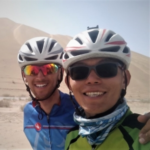
2020 Arrived in London, bicycles intact and spirit high! Settled down and working in London. NOW Frontend/product engineer with a passion for beautiful and functional applications. Currently in a full stack team building a web-based trading platform for buying and selling cryptocurrency. I strive to deliver by solving business problems, thinking further than just the requirements, design and code. Design tools like Figma are always open alongside my coding tools.
Frontend: JavaScript, TypeScript, Less/Sass, React, Ember.js
Development: Jira, Agile, CI/CD, Claude Code, Gitlab Pipelining, Grafana Dashboarding
Design: Figma, Photoshop, Illustrator
Road cycling, tour cycling, running, hiking, scuba diving, bouldering, climbing.
Co-founded the Gayzelles Running Club, an LGBT+ running club in southeast London with over 100 members.
Lead designer for the Gayzelles branding, club shirt, and social media content.
Baking (occasionally bringing in baking to the office), playing the keyboard, learning languages on Duolingo (2000+ days streak) ‒ French, German, Spanish, Mandarin, Cantonese, Russian.
At home you'll find me cooking and baking, if my current home has a backyard, I'll be getting my green fingers dirty.
When I'm away from home, it'll be travelling somewhere so I can practice foreign languages, tour cycling between towns, or hiking some hills.
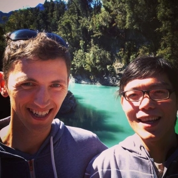
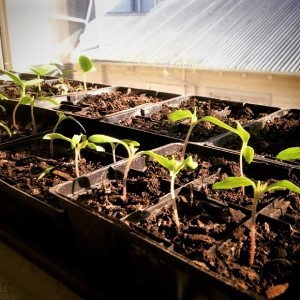
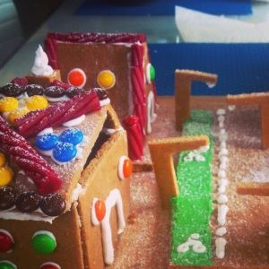
What began as a conversation between four neighbours has grown into a thriving LGBT+ running club with over 100 members across southeast London. As co-founder and sole designer, I owned the brand from zero — turning an idea into a visual identity that the community genuinely rallies behind.
The challenge was to create something that felt inclusive, energetic, and proudly queer — distinct enough to stand out at races, but versatile enough for social media, apparel, and print.
I developed a full brand kit covering logo design, typography, colour system, and usage guidelines. Every decision was intentional: the palette, the mark, the tone — all designed to resonate with a diverse, active community.
For the club running top, I ran a participatory design process — iterating on concepts over several months, gathering feedback from members, and refining based on what the community responded to. The final design was put to a club-wide vote, ensuring buy-in and a result people were proud to wear. Seeing those jerseys at races across southeast London is the best kind of validation — design that lives in the real world, worn by the people it was made for.
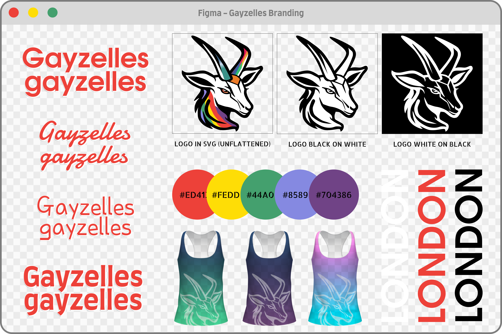
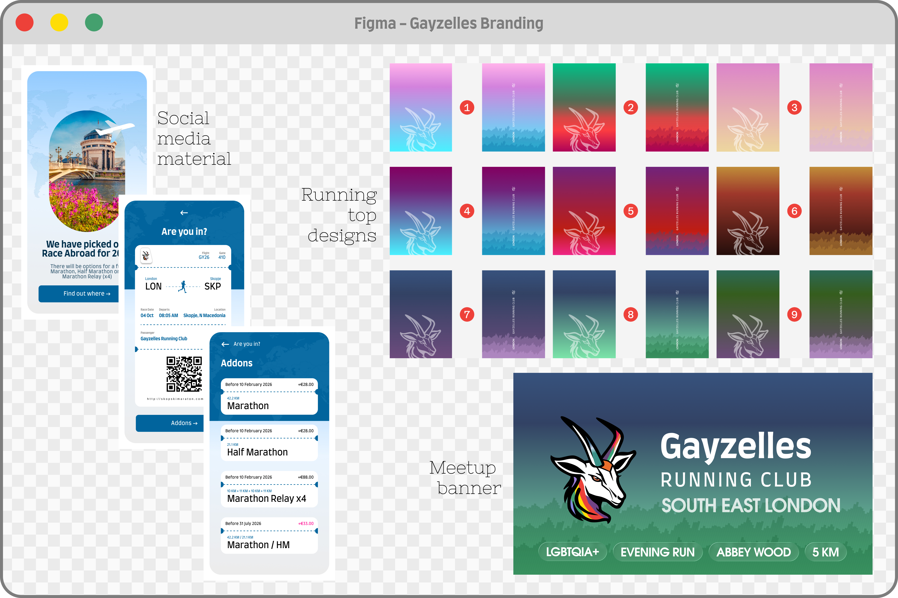
Abbey Soap Studio was born from our kitchen in Abbey Wood. With my partner, I developed a complete brand identity from the ground up. This project allowed me to explore the full spectrum of visual design, from conceptual logo development through to print-ready product packaging. I explored an extensive range of typographic and iconographic directions, iterating through dozens of logo concepts across multiple font styles - from elegant serif and script treatments to bold display options. The final identity centres on a flowing lowercase "a" icon, refined across primary, rounded, and product-specific icon formats to ensure versatility across all applications.
The logo features a soft pastel gradient palette — blending pinks, lilacs, and mint — was developed to reflect the natural, artisan quality of the products. This gradient system was applied consistently across icons, packaging, and marketing materials, creating a cohesive and immediately recognisable visual language.
I designed a full suite of soap label concepts, including front labels, back labels, and wraparound box packaging. Labels were designed with product naming conventions (such as "Lavender"), batch numbering, and ingredient information in mind, balancing aesthetic appeal with practical retail requirements. This personal project demonstrates skills in brand strategy, logo design, typography, colour theory, packaging design, and print production, as well as the ability to maintain consistency across a growing design system.
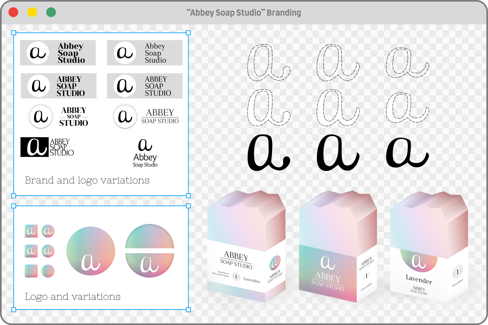
Logo, font, label, and packaging - the whole package.
Remote work stripped away the casual moments of praise that make a team feel connected. I designed and built Kudos — a Microsoft Teams Power App that made recognition visible, fun, and habitual.
The concept was simple: when someone wants to thank a colleague, they raise a Kudos through the app, which broadcasts it to the whole team channel. But the details made it stick — a randomised gif of someone clapping, recognition tied to company core values, and a live leaderboard tracking each member's tally.
It became part of our team rhythm. Kudos were reviewed every fortnight during retrospectives, giving the team a moment to reflect on contributions beyond the sprint output. The result was a lightweight tool with real cultural impact — improving morale during one of the most isolating periods most teams had ever faced.
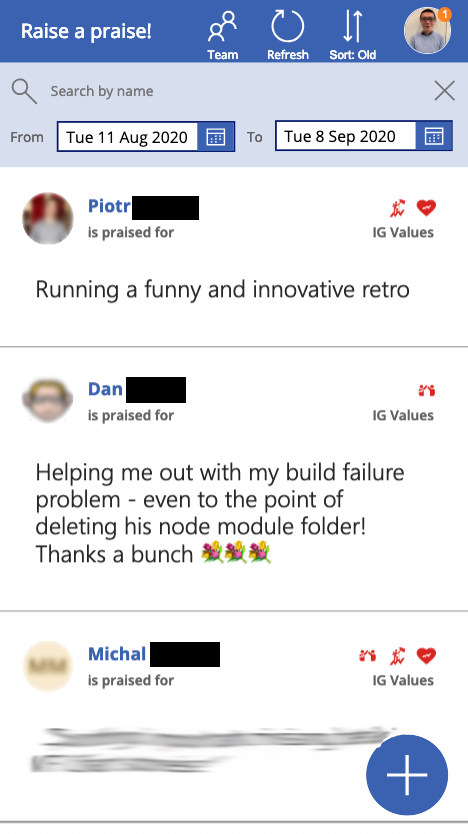
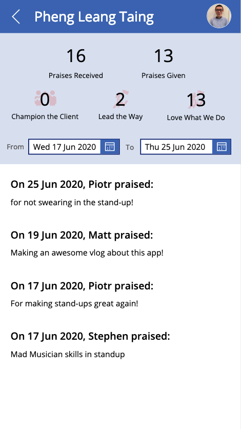
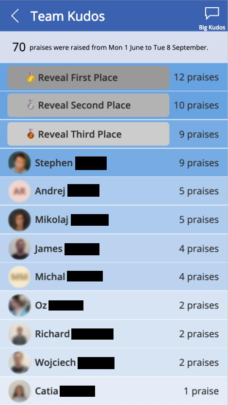
Kudos - Good job for doing that thing you did.
After completing my 2 years trip, my partner and I had accumulated plenty of travel materials, tons of cycling metrics and stories. Naturally, I made a travel blog with Angular and hosted it on Github Pages. "Pedco" is short for @pedallingcontinent (our Instagram travel account).
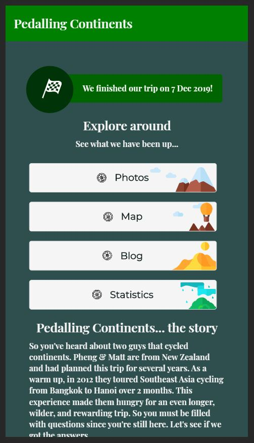
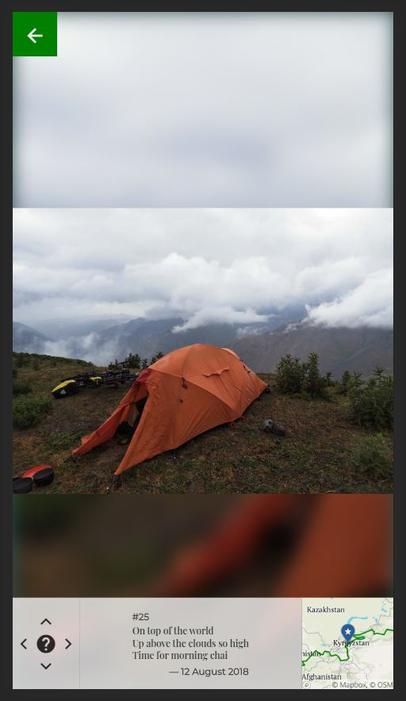
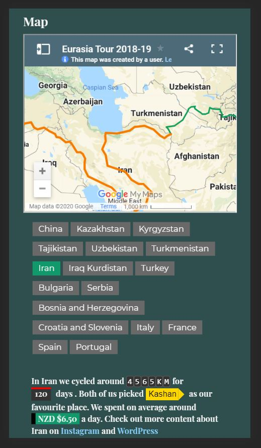
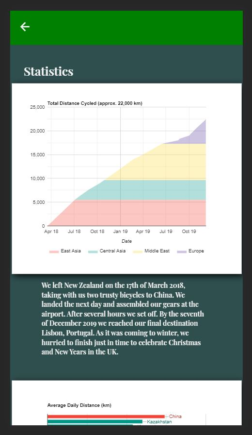
Pedco - everything about our recent trip
Once the travel stopped and the world went into lockdown, it became difficult to create content for our social media followers. Using random photos from the travel that weren't good enough to be featured, I upcycled them into a series of pop quizzes using Instagram's Story platform. It got quite popular. The quiz was active for 24 hours and I shared the answers the next day, every weekend until the lockdown ended. A total of seven sets were made for different portions of the trip. Why not test yourself?
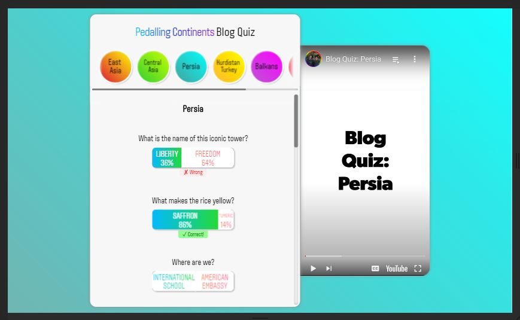
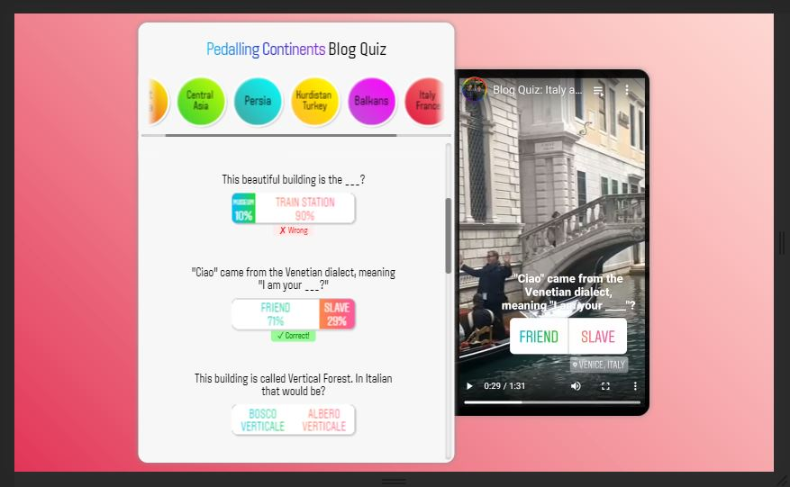
Pedalling Continents Blog Quiz - Think you know everything about our trip?
At work, we had monthly coding competitions and I submitted a few entries. The theme is in bold and my submission is linked:
When I was the teaching assistant at the IT department of the Southern Institute of Technology, I saw the opportunity to automate the process of producing multi-choice exam papers. There weren't many options available that suited my need, so instead, I created one that was easy to use and format. The final product was a Java-based application which took in a text file for input and outputted HTML files (the Questions and Answers) which can then be printed. If you are sick of randomising test questions and want it done automatically with only a few clicks, give Exam Generator a try!
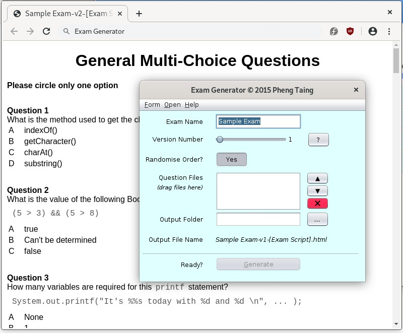
During my university study, I studied Mandarin and German on the side with my Computer Science degree. I wanted to create something that will put all my newly acquired skills together. I made a website using JavaScript, jQuery and various other shared libraries. This personal project challenged my design skills which I had always wanted to work on. The end result included plenty of UI controls that improved the user's experience. Keyboard shortcuts, visual aids (animation on buttons, tooltips), and multimedia controls (sound and video). Select a popular Mandarin song and start singing!